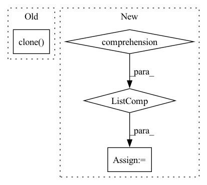

Pattern ID :2214
Before Change
maddpg.store_transitions([{
"state": {"state": ost.unsqueeze(0).clone()},
"action": {"action": act.clone() },
"next_state": {"state": st.unsqueeze(0).clone()},
"reward": float(rew),
"terminal": term or step == c.max_stepsAfter Change
[{"state": st.unsqueeze(0)} for st in states]
)
actions = [int(r[0]) for r in results]
action_probs = [r[1] for r in results]
states, rewards, terminals, _ = env.step(actions)
states = [t.tensor(st, dtype=t.float32, device=c.device)
for st in states]In pattern: SUPERPATTERN
Frequency: 3
Non-data size: 4
Instances Fragment ID: 9524321
Project Name: iffix/machin
Commit Name: d0a2a3bae481090848ab8f473c625dfe6cb93e2d
Time: 2020-08-07
Author: hanhanmumuqq@163.com
File Name: test/frame/algorithms/test_maddpg.py
M Class Name: TestMADDPG
N Class Name: TestMADDPG
M Method Name: test_full_train(3)
N Method Name: test_full_train(3)
M Parent Class: object
N Parent Class: object
M File Name: test/frame/algorithms/test_maddpg.py
N File Name: test/frame/algorithms/test_maddpg.py
M Start Line: 377
M End Line: 393
N Start Line: 377
N End Line: 395
Before Change
def forward(ctx: Any, group: dist.ProcessGroup, input: Tensor):
if get_world_size(group) <= 1:
return input
output = torch.clone( input) .contiguous()
dist.all_reduce(output, op=torch.distributed.ReduceOp.SUM)
return output
After Change
return input
ctx.input_shape = input.shape
ctx.leading_dim = 0
chunks = [x.contiguous() for x in torch.chunk(input, chunks=ctx.num_nodes, dim=ctx.leading_dim)]
assert len(chunks) == ctx.num_nodes
output = torch.empty_like(chunks[0])
dist.reduce_scatter(output=output, input_list=list(chunks))
return output
@staticmethod Fragment ID: 9524315
Project Name: microsoft/tutel
Commit Name: 6b434d936b8d892725a0ff0020d2a41f6aa43a3e
Time: 2021-11-15
Author: weicu@microsoft.com
File Name: tutel/impls/communicate.py
M Class Name: PostAllreduceSum
N Class Name: PostAllreduceSum
M Method Name: forward(3)
N Method Name: forward(3)
M Parent Class: torch.autograd.Function
N Parent Class: torch.autograd.Function
M File Name: tutel/impls/communicate.py
N File Name: tutel/impls/communicate.py
M Start Line: 85
M End Line: 89
N Start Line: 93
N End Line: 103
Before Change
def backward(ctx: Any, grad_output: Tensor):
if get_world_size(ctx.group) <= 1:
return (None, grad_output)
dinput = torch.clone( grad_output) .contiguous()
dist.all_reduce(dinput, op=torch.distributed.ReduceOp.SUM)
return (None, dinput)
After Change
if get_world_size(ctx.group) <= 1:
return (None, doutput)
dinput = torch.empty(ctx.input_shape, device=doutput.device, dtype=doutput.dtype)
chunks = [x.contiguous() for x in torch.chunk(doutput.view(ctx.num_nodes, -1), chunks=ctx.num_nodes, dim=0)]
dist.reduce_scatter(output=dinput, input_list=chunks)
return (None, dinput)
class PostAllreduceSum(torch.autograd.Function): Fragment ID: 9524319
Project Name: microsoft/tutel
Commit Name: 6b434d936b8d892725a0ff0020d2a41f6aa43a3e
Time: 2021-11-15
Author: weicu@microsoft.com
File Name: tutel/impls/communicate.py
M Class Name: PreAllreduceSum
N Class Name: PreAllreduceSum
M Method Name: backward(2)
N Method Name: backward(2)
M Parent Class: torch.autograd.Function
N Parent Class: torch.autograd.Function
M File Name: tutel/impls/communicate.py
N File Name: tutel/impls/communicate.py
M Start Line: 76
M End Line: 80
N Start Line: 83
N End Line: 88